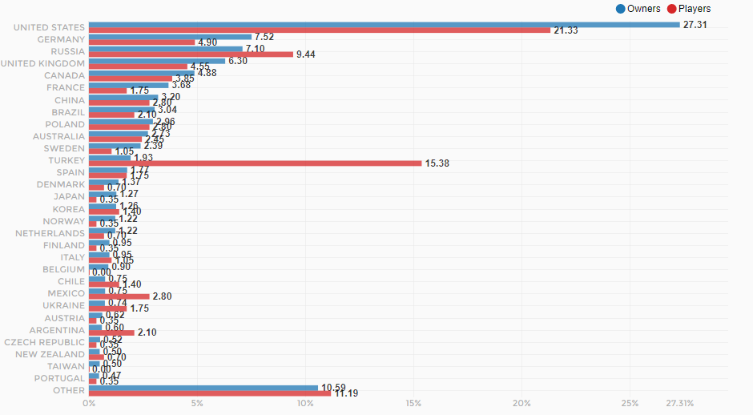
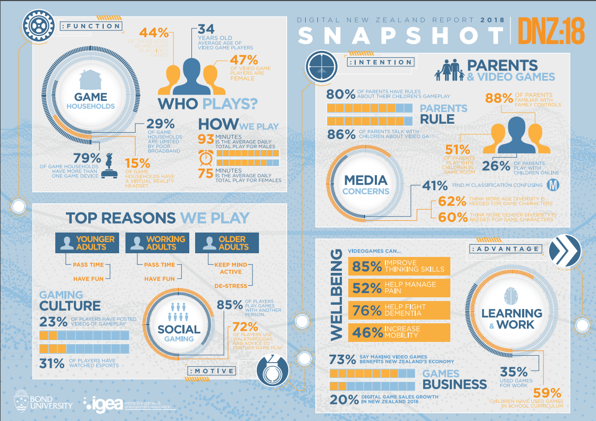

A definition of digitalisation according to the Merriam-Webster Dictionary is “the process of converting something to digital form” (definition is the same for digitisation). However, if looking at the gaming industry, digitalisation is best explained in the following definition, by Mira Nuotio: “Digitalisation has not yet been properly defined, yet it is universally understood to mean the transition of processes, knowledge, content and property from this physical reality we inhabit, to the digital reality made up of 0s and 1s, where “things” are stored, moved and manipulated electronically. The content then becomes a virtual version of itself, in a virtual environment. We access this virtual environment through the portals we keep on our desks, or carry around in our pockets – our computers, tablets and smartphones. The screens on our electronic devices translate the endless 0s and 1s to something we can see, understand and experience, rather like our eyes and brains translate light, so that we can see the world around us. But what if, one day, we were to go from experiencing the virtual world through these little windows in our pockets, to actually being able to immerse ourselves in it completely?”
Source: Business in Metropolia
With the digital revolution came the personal computer and with it the microprocessor that would increase in performance and efficiency almost continuously (Moore’s Law), with microprocessors’ advancements they were then used and are still used in many different everyday devices such as; phones, cameras, music players, computers and much more. Another development was the improvement of transmission technologies such as “computer networking, the internet and digital broadcasting”. This greatly aided the entertainment and communication industries and allowed them to reach and serve a worldwide audience regardless of where the source content was from.
The digital revolution also had a large economic impact on the entertainment industries such as; gaming, music and film. Because of the internet and the World Wide Web (WWW) businesses are able to communicate better, outsource, globalise and organise multi country businesses without much hindrance. Smaller companies and businesses are available to much larger audiences and aren’t held back as much by budget when trying to market to people all over the world, with the video game industry, this is especially true for individual and small developers that without digital distribution would be nowhere near as successful even if their game was popular as their potential customers couldn’t be worldwide.
It is important to mention how games are distributed digitally. This is known as a platform. A platform enables the game to be played, and also functions as a shop where the gamer can purchase the game, add-ons to the game, lastest version etc. One example of digitalisation that has had a big affect on the PC gaming industry is the digital distribution platform “Steam”. Steam originally started as an idea on how to keep some of gaming firm Valve’s popular online games, primarily “Counter-Strike” up to date. Every time there was a new patch released (update) it might take a week before the entire community of players managed to get hold of it. Steam, released in September 2003, was designed to manage Valve’s games keeping them up to date and also adding anti-piracy and anti-cheat programs. Steam has continued to develop across the years and was estimated in 2015 that “Valve controls 15% of the global PC games market”, also looking at data from unoffical data collecting site “Steam Spy as of the 14/11/2017 Steam has had about 52 million active users in the last 2 weeks and around 10 million years of total playtime of games on Steam.
Source: PC Gamer
Other digital distribution platforms emerged in the industry or changed how they worked a couple years later such as; Battle.net, Origin, Uplay, all each with their own stores, for players to purchase games. This is restrictive because, while the games supermarket Steam, they only offer games they have made themselves. All of these platforms otherwise known as digital rights management platforms (DRM), help to stop piracy of games, as they are required for the games to launch. This is good for the industry as it loses less money to piracy, but can be problematic if the platform stops working temporarily or is annoying to use it can be less incentive to customers to buy games from the platform.
The impact of digitalisation has affected almost the entire gaming world and has expanded the video game industry massively. A 2014 study on the economic impact of gaming on American society shows that ”from 2009 to 2012, the U.S. video game industry increased in size by more than 9 percent – four times the growth rate of the U.S. economy during the same period“ and the “industry directly and indirectly employs more than 146,000 people”, this study shows that the video game industry has changed dramatically since digitalisation. Without the start of digital distribution in the early 2000s and the potential of the internet being used more, it is possible that the impact of video games may not have been so big, as since then video games have been able to reach a much larger audience and have been made more easily accessible.
Source: The Entertainment Software Association
Before digitisation and digital distribution games as well as other media were distributed and installed/ played using portable physical media such as floppy disks, cd and dvd disks, console cartridges and more. One example of a game that was first available in stores in CD format was Half-Life which was then released later on Steam for download. It now has about 6.6 million owners of the game who are located all over the world.
Source: Steam Database

Source: SteamSpy
Digital distribution has had a massive impact on electronic gaming as well as almost all mainstream mediums including movies, music, TV shows, also art mediums such as photography, design, computer design/ 3D design e.t.c. Digital distribution has allowed publishers to publish to a worldwide audience allowing them to gain many more customers than they would opening shops in only select locations. It has helped industries that embraced digital distribution and quickly looked for ways to control it, but it has also damaged many industries that tried to stick to selling physical copies of things like music, movies and games. For example, the music industry went through a difficult time when audio files were created and then distributed online containing music that was previously generally sold on records, or compact discs. Many music stores have shut down because of this and instead people have bought or pirated music from the internet. However, the gaming industry was not affected in the same way, because the indusrty embraced digtital distribution staightaway and also to pirate games was not as easy as downloading music, or a film.Digital distribution and digitalisation grew the videogame industry allowing for the industry to generate $91 billion worldwide in 2016, according to a report from the market researcher SuperData Research
Source: Venture Beat
A brief history of game distribution to highlight the impact and implication of digitisation and distribution had on the video game industry. The first digital distribution of video games that I could find was the GameLine which was available during the early 1980s for the Atari 2600 and was developed by Control Video Corporation (CVC) who later became America Online (AOL), the GameLine was an Atari 2600 cartridge that had a phone jack for dial up internet that allowed it to connect to the CVC servers/ network and download one of the multiple games available as long as you had a membership pin. The impact of this meant that players no longer had to go to the videogaming shop to buy games from being physical objects such as discs, or cartridges, to being digital. Further they could only stock a certain number of physical copies so this potentially could curb the number of players of that game. The Worldwide web was taken up quickly by inhabitants of the developed world. The graph below shows the usage of the internet increased massively - the more accessible games were through digitalisation the stronger the industry became.

Source: Wikipedia
{kind=link}
The significance of change for the gaming industry can be seen by looking at the changes in electronic gaming. Electronic gaming has changed dramatically at various times throughout its 50 year history and consequently transformed what people did during their spare time, and so has influenced past and present culture and no doubt will continue to influence society. It changed many people's lives and created a new medium for people to express their ideas and thoughts and have it potentially accessed by many people around the world, since it was a medium and people could express themselves within a game to have emotional or other impacts on the player just like how paintings, sculptures, crafts and films can have impacts on viewers. Video games became, in my opinion, an art form, and an art form that now reaches many people who had not been reached before by other art forms and an art form that is more interactive and more varying in emotional responses than other current art forms.
So, it is not surprising that the video game industry has increased massively over the past decade and is looking to increase still as a result of the development of digital distrinution. An example of growth in the PC video game industry is the amount of games being released on Steam. In 2007, 116 games were released, in 2012, 403 games were released, and so far in 2017, 6767 games have been released. Without digital distribution not all of those games would have been released. Due to them not being popular or because they were developed by an indie developer and video game stores had to think about shelf space and what they are going to sell the most of, this was a similar problem for other media such as lesser known tv series that can’t get times to air their show as other bigger shows are given priority, but with an online digital store they aren’t limited by Tv schedules or shelving space and can sell as many online products as they like or stream different movies, tv series and more to multiple different people simultaneously.
Source: SteamSpy
Gabe Newell (co-founder and president of Steam): “The worst days [for game development] were the cartridge days for the NES. It was a huge risk – you had all this money tied up in silicon in a warehouse somewhere, and so you’d be conservative in the decisions you felt you could make, very conservative in the IPs you signed, your art direction would not change, and so on. Now it’s the opposite extreme: we can put something up on Steam, deliver it to people all around the world, make changes. We can take more interesting risks.”
Source: RockPaperShotgun
An example of the video game industry’s influence and significance (to New Zealand in particular) is the Digital New Zealand 2018 study (DNZ18) which found among many things that 67% of New Zealanders play video games, 47% of those are female and the average age of players is 34.

Source: Interactive Games and Entertainment Association
This shows that videogames are a big part of New Zealanders past times, and it is likely to continue and probably accelerate in growth as the current generation of gamers grow older and new generations are born and follow in the previous generations footsteps.
An implication of digitalisation talked about by Mira Nuotio in their article “A World of Gamers - How Digitalisation Is Changing the Entertainment Industry” is that it has weakened revenue models for movies and games (though not as much as movies) through piracy, which is one of the reasons why “Cinema ticket sales are falling by the year” and why “hardly anyone buys movies like that [from movie/ video stores] anymore”, they also talk about streaming services like Netflix but say they don’t have a chance because they are “restricted by outdated copyright laws” and that it causes their quality of service to be compromised, which then causes people to go back to piracy where they can watch or download almost everything they want. The article continues talking about how the gaming industry has more variety in terms of revenue models and is doing better to keep up with technological changes, for example: selling virtual goods, having freemium (paid/ subscription) services and placing advertisements in free-to-play games, “real money trading in games” and electronic sports (eSports) which can make a lot of money for participants and the tournament organisers. Nuotio then talks about what they are calling “IP First approach” which is the idea of not creating a game but instead an IP (intellectual property).
Digitalisation and digital distribution developments have made great contributions and changed many entertainment industries. They have been beneficial for large companies that can now market to and reach global markets easily, it has also been beneficial for small companies and individuals to sell their potentially great product that in a global market could be successful, but would never see such success if it was limited to being sold in retail stores close to the developers. Last, it has been beneficial for customers as prices will be less because manufacturing costs will be less, and they are able to buy products from wherever they want when they want, not being limited to television programming, retail store stock and shipping time. Digitalisation is ever increasingly replacing retail stores, and I think that eventually it will get to the point where physical media such as CDs and DVDs will be just as obsolete as VHS tapes are now. With the video game industry it has nearly occurred for the PC gaming industry, as there are far less PC games on retail video game store shelves and most disc copies of games will have a key to activate on a platform like steam, also because of manufacturing costs disc copies are more expensive so there is next to no incentive for a PC gaming customer to buy from a retail store. With the console gaming industry most consoles have smaller internal storage to save manufacturing costs and most console games will just run straight off the disc which is slower than internal storage alternatives. So, if you go to a retail video game store almost all of the products will be for consoles, but I am expecting that within the next 10 years, hard drives used for internal storage will have advanced enough that all mainstream consoles will easily have enough storage to store games and will have no need for discs; especially with more advancements in networking speed allowing faster downloading of online content.
Bibliography:
The Guardian
Lifewire
Wikipedia: Counter Strike
Wikipedia: Valve Corporation
Wikipedia: Internet
Wikipedia: Steam
Wikipedia: Digital Distribution
PC Gamer
SteamSpy
Steam Database
The Entertainment Software Association
The Entertainment Software Association: Video Games 21st Century 2014 pdf
Business in Metropolia
News.com.au
Interactive Games and Entertainment Association
Venture Beat